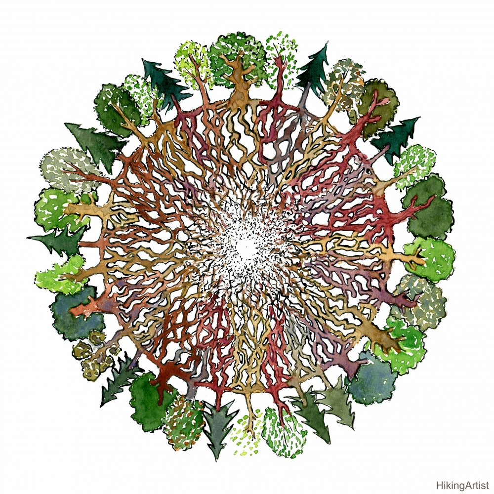

- Dr. Bernardo E. Lechner. Director de laboratorio y del Instituto de Micología y Botánica (InMiBo, UBA-CONICET). Posee varias líneas de investigación, la mayoría relacionadas con el estudio de la biodiversidad, fisiología y producción de hongos Agaricales. Su tesis doctoral abarcó el estudio del género Pleurotus. Es el máximo responsable del servicio de identificación de hongos tóxicos. También interviene en investigaciones sobre hongos entomopatógenos y sobre producción de sustancias de interés biotecnológico.
- Joaquín Aliaga. Estoy en el laboratorio desde el año 2014 y realicé mi tesina de grado en cultivo de hongos silvestres del género Macrolepiota. Me especializo en cultivo de hongos comestibles y medicinales, tanto en la producción casera como a escala productiva. Actualmente realizo mi tesis de doctorado en el género Hohenbuehelia, un grupo pariente de las Gírgolas (Pleurotus sp.), especies comestibles de alto valor culinario. Me dedico a estudiar la diversidad del género en nuestro país, las relaciones evolutivas dentro del mismo y las potencialidades de cultivo, tanto para alimentación como para usos medicinales.
- Dinorah Ramos. Estoy realizando mi tesis de licenciatura en Cs. Biológicas sobre el cultivo de hongos comestibles en compost. Algunos de los hongos cultivados son 𝘗𝘭𝘦𝘶𝘳𝘰𝘵𝘶𝘴 𝘰𝘴𝘵𝘳𝘦𝘢𝘵𝘶𝘴, 𝘊𝘰𝘱𝘳𝘪𝘯𝘶𝘴 𝘤𝘰𝘮𝘢𝘵𝘶𝘴 y 𝘔𝘢𝘤𝘳𝘰𝘤𝘺𝘣𝘦 𝘵𝘪𝘵𝘢𝘯𝘴.
- Juan Suarez. Estoy en el Laboratorio de Hongos Agaricales desde el 2017. Me dedico a estudiar la diversidad de Agaricales en la reserva de Santa Catalina, pero también con el equipo hacemos experimentos de cultivo en interiores de especies comestibles.
- Agustín Martinez. Soy estudiante de Biología y estoy trabajando en conocer la diversidad de Agaricales en la Reserva Los Robles de Moreno. Te comparto algunas imágenes.
- Florencia Quinteros. Ya terminé la Lic. en Cs Biológicas y sólo me falta defender la tesina para obtener el título. Mi tesina fue un trabajo en conjunto entre el Laboratorio de Inflamación y Cáncer, y el Laboratorio de Hongos Agaricales, ambos de FCEN, UBA. Con los estudios quisimos explorar si había efecto antiproliferativo en células tumorales de próstata expuestas a extractos de cepas de hongos comestibles.
- Josefina Caso. Me acabo de graduar como Lic. en Cs. Biológicas. Realicé mi tesina registrando las especies de hongos Agaricales presentes en el bosque de alisos de la Reserva Ecológica Costanera Sur.
- Elizabeth Melgarejo-Estrada. Soy bióloga boliviana realizando un doctorado en la Universidad de Buenos Aires con una beca latinoamericana de Conicet y trabajo en colaboración del Museo NKM en Bolivia. Mi proyecto busca documentar la riqueza de hongos Agaricales de las Yungas de Bolivia y estudiar la etnomicología de un pueblo Quechua. Soy muy feliz aprendiendo de hongos y del conocimiento tradicional de mis ancestros.
Es que los científicos siempre nos han dicho que la ley de la vida es "La supervivencia del más apto" y que la naturaleza es cruel, que los animales compiten y se matan entre ellos para sobrevivir. Todos sabemos que las plantas luchan entre ellas, para llegar a lo más alto y obtener la mayor cantidad de luz. Pero alguno de ustedes ha escuchado que las plantas más grandes alimenten a las más pequeñas? O, tal vez, que una planta le avise a su vecina que un peligro se acerca? Históricamente, a la ciencia le ha parecido ridícula la visión de que los seres vivos "que no piensan" puedan organizarse para trabajar en conjunto por el beneficio común ¿Quién podría pensar algo así?¿Recuerdan cuando les contamos sobre las Micorrizas? Esa red de hongos que se unen a las raíces de los árboles y plantas y los ayudan a crecer?
La ecóloga forestal Suzanne Simard descubrió, a finales del siglo XX, que los árboles del bosque están conectados por una red de raíces y micorrizas, a través de la cual transfieren nutrientes desde las «fuentes» o emisores a los «sumideros» o receptores. En su experimento pionero, marcó las hojas de abedules (Betula papyrifera) en Canadá, con isótopos de carbono (C13 y C14) y comprobó que este carbono era transferido a plántulas vecinas de abeto (Pseudotsuga menziesii), que crecían en la sombra. En el sentido contrario, el carbono marcado en las hojas de abeto, durante el invierno apareció en los jóvenes abedules desprovistos de hojas. La publicación de estos resultados sorprendentes en la prestigiosa revista Nature, supuso el lanzamiento a la fama (científica) de la joven Simard y el auge en la investigación sobre las redes de micorrizas, que serían bautizadas como Wood Wide Web o internet del bosque (en un juego de palabras de las siglas en inglés WWW, cambiando World-mundo por Wood-bosque) Un gran número de científicos está estudiando lo que ellos llaman la WWW. Y no se refieren a la World Wide Web, que es la internet que usamos para conectarnos, por ejemplo, a facebook, sino que se refieren a un sistema denominado "Wood Wide Web", una red del tamaño de todo el bosque, formada por una gran cantidad de hongos que se conectan a las raíces de gran cantidad de árboles y plantas y les permiten comunicarse entre sí, repartiendo nutrientes entre los más jóvenes, extrayendo la comida del árbol viejo que acaba de caer al suelo. Es que nuestros bosques son mucho más que "unos arboles" que crecen en el mismo lugar, son un sistema organizado, que no puede ser reemplazado ni "reforestado" así como así.
Es por esto que debemos cuidar nuestros ambientes naturales y proteger lo poco que nos queda de los ambientes nativos de nuestro país, hay mucho que no conocemos, hay mucho que se puede dañar y perder si no lo cuidamos correctamente. Disfrutemos de nuestra naturaleza, cuidemos a los más desprotegidos!
